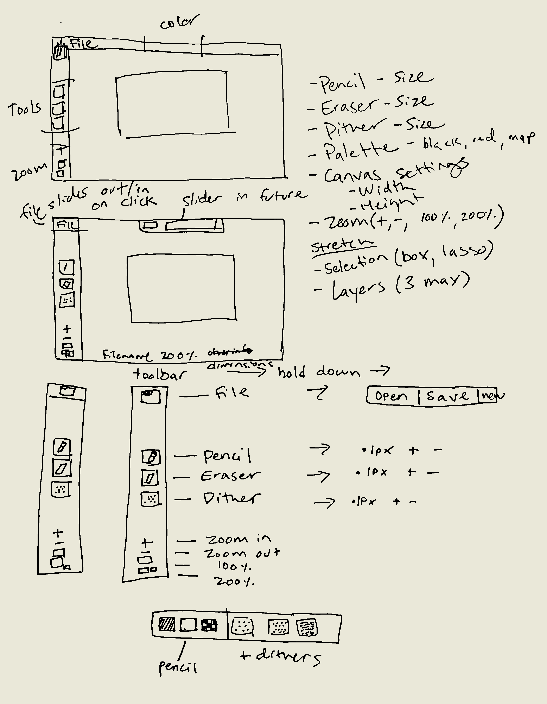

A pixel sprite drawing program prototyped in p5, a Javascript framework for interactive visual experiences.
This program is operated with the left mouse button. Press E to clear the canvas.
The minimal interface is inspired by Aseprite and Flipnote Hatena, and serves as a prototype of an intuitive experience for drawing on a touch screen. The inital wireframe, pictured below, also illustrates additional potential features.
I wanted to recreate a desirable feature of aseprite, the "Pixel-perfect" setting. With this setting, clean pixel lines can be drawn. To the left, you can see a normal binary line compared with a pixel perfect line.
Below, is the code for the pixel-perfect function, followed by the pen tool, which includes functionality to ensure the stroke doesn't have gaps.